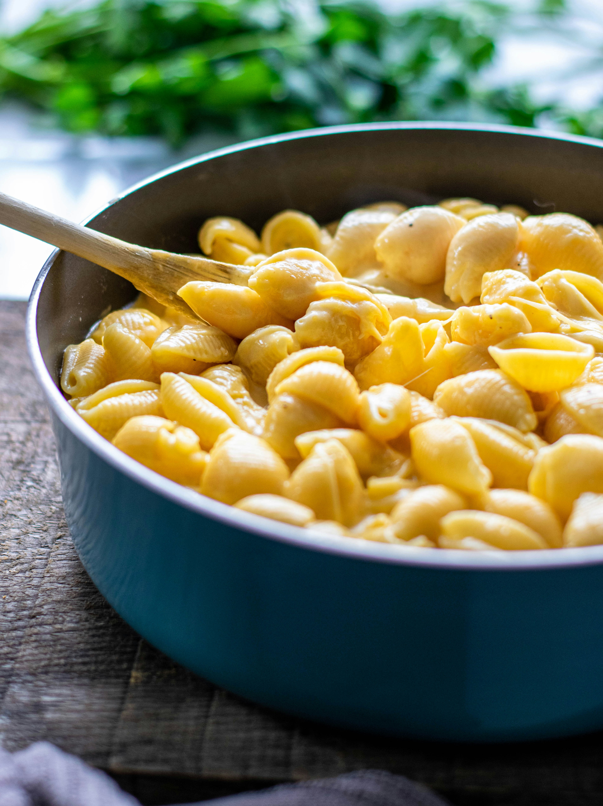

Mac and Cheese

Description
Mac and cheese is a creamy, comforting classic that brings together tender pasta and a rich, cheesy sauce. Made by melting sharp cheddar into a smooth béchamel base, this dish offers a perfect balance of gooeyness and flavor. Baked to golden perfection with a crispy breadcrumb topping, it’s the ultimate comfort food—easy to make, satisfying to eat, and loved by all ages. Whether served as a side or a main, mac and cheese never fails to warm the soul.
Ingredients
- 8 ounces elbow macaroni
- 2 cups shredded sharp cheddar cheese
- 2 cups milk
- 2 tablespoons butter
- 2 tablespoons all-purpose flour
- 1/2 teaspoon salt
- 1/4 teaspoon black pepper
- 1/2 teaspoon mustard powder (optional)
- 1/2 cup breadcrumbs (optional, for topping)
Steps
- Preheat your oven to 350°F (175°C) if you plan to bake it with a breadcrumb topping.
- Cook the elbow macaroni according to the package instructions, then drain and set aside.
- In a medium saucepan, melt the butter over medium heat.
- Whisk in the flour and cook for about 1-2 minutes to form a roux, stirring constantly.
- Gradually whisk in the milk, continuing to stir until the sauce thickens and starts to bubble.
- Remove the sauce from heat and stir in the shredded cheddar cheese until melted and smooth.
- Season the cheese sauce with salt, black pepper, and mustard powder if using.
- Combine the cooked macaroni with the cheese sauce, stirring to coat evenly.
- If baking, pour the mixture into a greased baking dish, sprinkle breadcrumbs on top, and bake for 20-25 minutes until golden and bubbly.
- If not baking, simply serve the mac and cheese warm right away.
Home